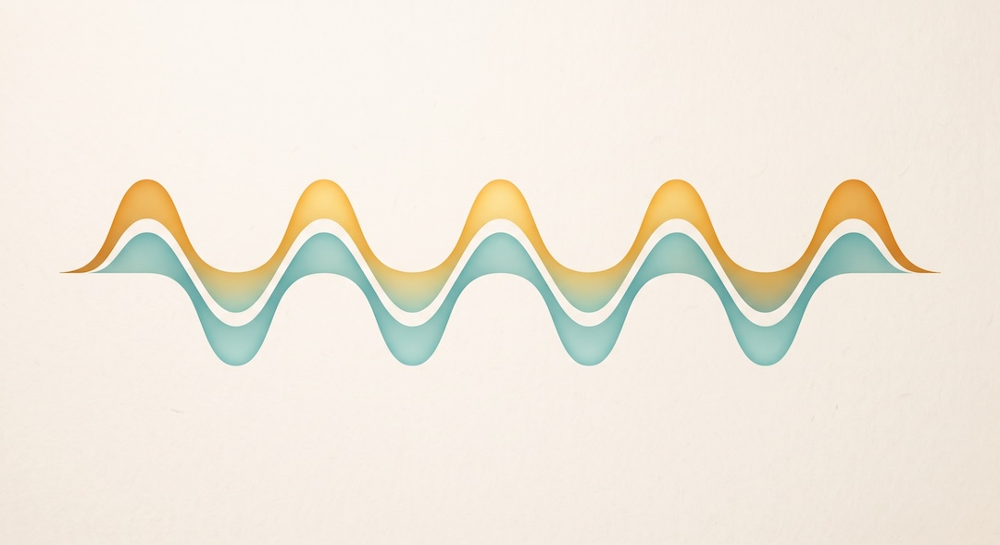
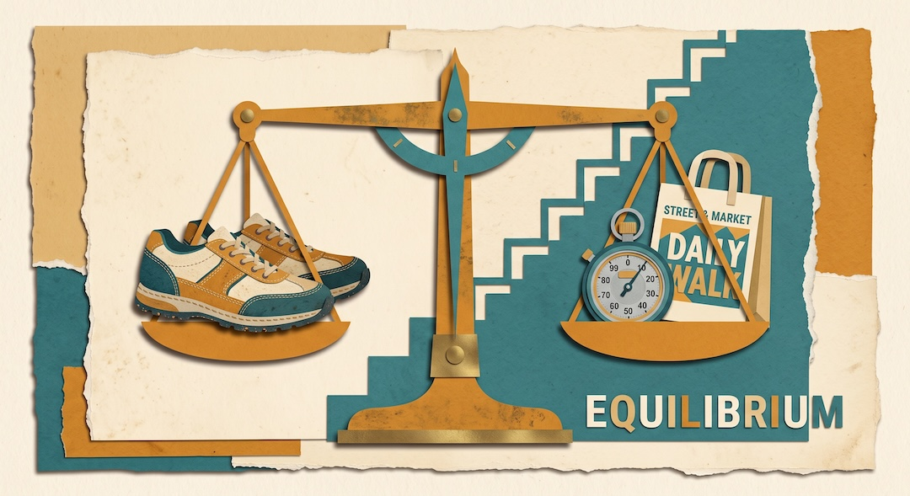
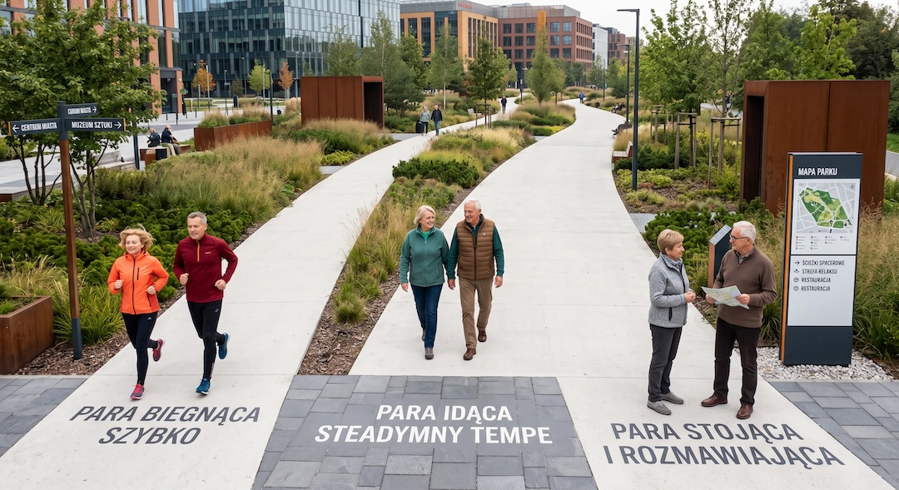
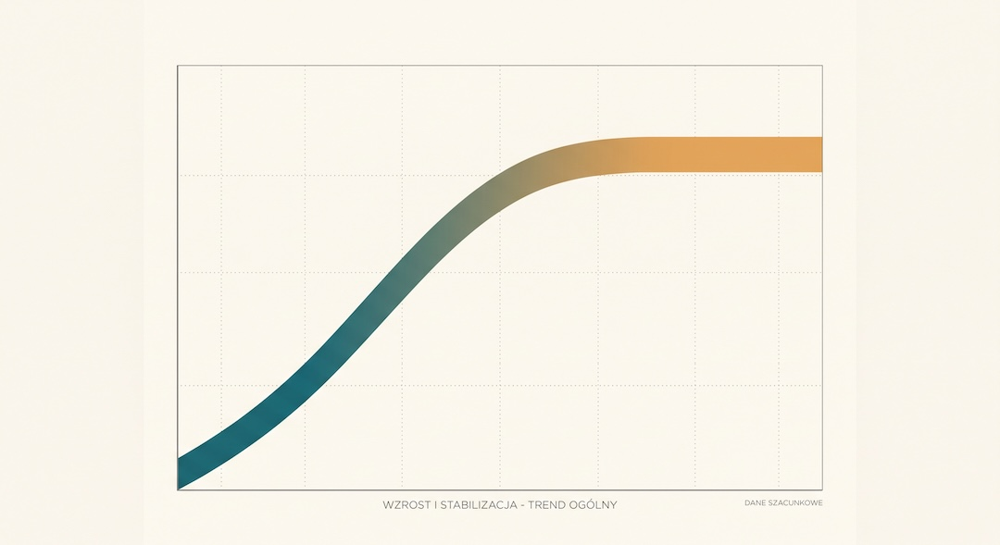
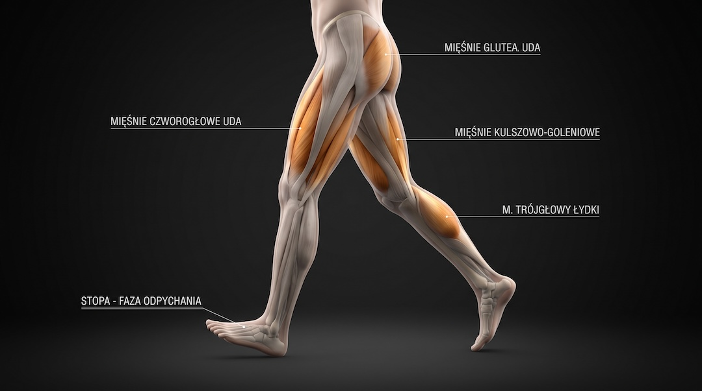
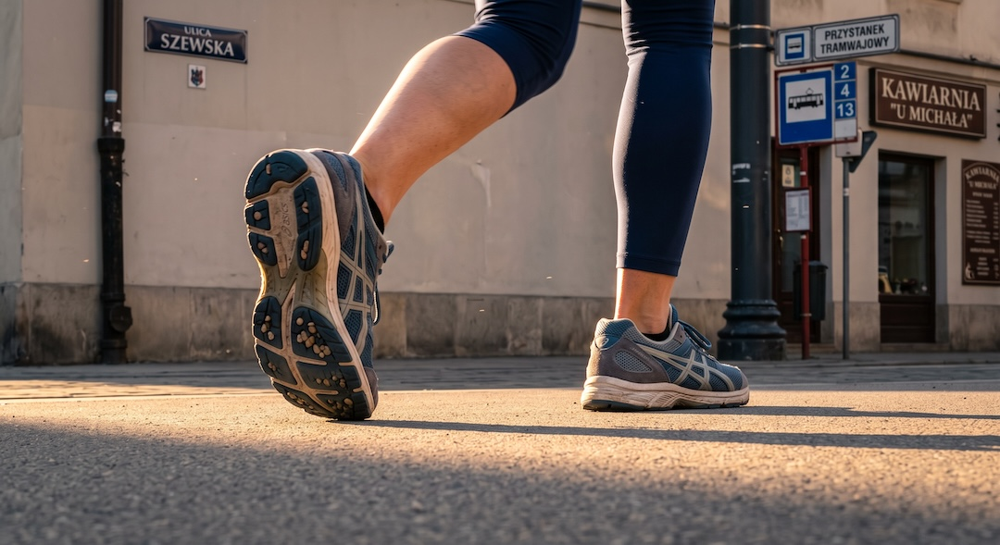
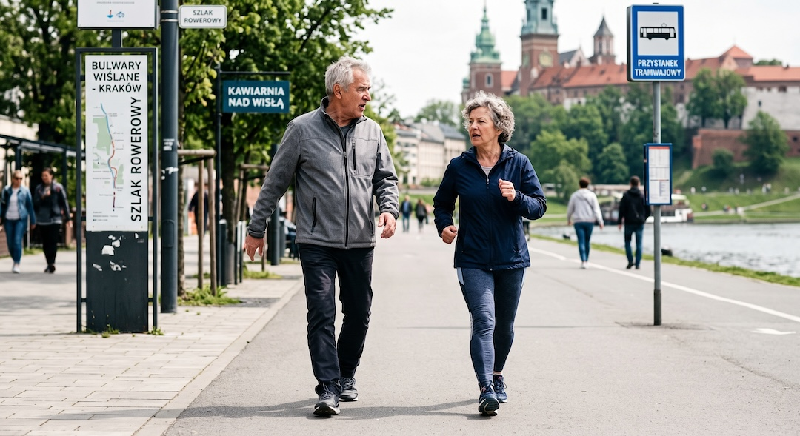
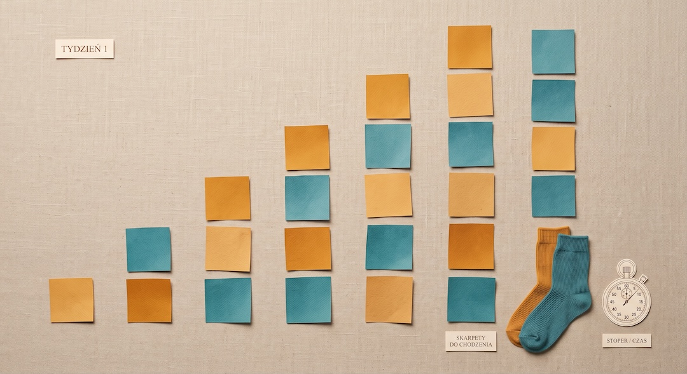

Internet odkrył marsz japoński i od razu ogłosił, że 10 000 kroków to przeżytek. Kłopot w tym, że porównuje dwie różne rzeczy: jedna to jednostka treningowa, druga to dzienna dawka ruchu. Jeśli masz między 50 a 65 lat, właśnie ta różnica decyduje o tym, co realnie zyskasz.
Szybka odpowiedź
Marsz japoński to naprzemienne trzy minuty szybko i trzy minuty wolno, powtórzone co najmniej pięć razy. W bezpośrednim porównaniu z ciągłym marszem dał większy wzrost wydolności i siły ud oraz wyraźniejszy spadek ciśnienia u osób około sześćdziesiątki. Nie zastępuje jednak dziennej objętości chodzenia, a sam cel 10 000 kroków nigdy nie był progiem naukowym.
Kluczowe wnioski
- W jedynym bezpośrednim porównaniu marsz interwałowy pobił ciągły marsz na wydolności, sile ud i ciśnieniu, ale przy tym samym wydatku energetycznym i tylko na wskaźnikach pośrednich.
- Cel 10 000 kroków nie ma mocnego oparcia w danych: u osób powyżej 60 lat korzyść wypłaszcza się w okolicach 6000 do 8000 kroków dziennie.
- Najrozsądniejszy układ to jedno i drugie: cztery sesje interwałów tygodniowo plus utrzymana dzienna objętość chodzenia, do tego siła i równowaga.
- Intensywność ustawisz bez badań wydolnościowych: na szybkim odcinku wypowiadasz kilka słów, ale nie całe zdanie.
Czym właściwie jest marsz japoński?
Marsz japoński to marketingowa nazwa protokołu interval walking training, opracowanego na Uniwersytecie Shinshu w Matsumoto przez zespół Hiroshiego Nose i Shizue Masuki. Schemat jest banalny: trzy minuty szybkiego marszu, trzy minuty wolnego, powtórzone co najmniej pięć razy, co najmniej cztery dni w tygodniu.
Szybki odcinek ma iść powyżej 70 procent szczytowej wydolności tlenowej, wolny w okolicach 40 procent. Trzy minuty nie wzięły się z numerologii. Autorzy oryginalnego badania przyjęli taki odcinek, bo większość uczestników nie była w stanie utrzymać wysokiej intensywności dłużej niż trzy minuty z powodu zmęczenia. Jeśli rozważasz kije, sprawdź najpierw różnice w technice opisane w poradniku nordic walking po 50.
W przeglądzie z 2024 roku badacze podkreślają rzecz, która ginie w filmikach: marsz interwałowy pozostaje wysiłkiem w pełni tlenowym, bo stężenie mleczanu rośnie w nim tylko umiarkowanie. To nie jest HIIT z burpees. Dlatego w ogóle da się go zalecać osobom z niską wydolnością i chorobami przewlekłymi.
W badaniach intensywność pilnowało urządzenie noszone przy pasie, które mierzyło ją akcelerometrem i barometrem, sygnałem dźwiękowym informowało o zmianie odcinka i wysyłało dane na serwer. To ważny szczegół, bo w domowej wersji tę rolę musi przejąć twoje własne odczucie wysiłku.

Werdykt FitPo50: mit jest w połowie prawdziwy?
Zdanie „marsz japoński jest lepszy niż 10 000 kroków dziennie” zestawia dwie rzeczy z różnych porządków. Marsz japoński to jednostka treningowa, która ma podnieść wydolność. Dziesięć tysięcy kroków to dzienna objętość ruchu, zbierana przez cały dzień, razem z zakupami i schodami.
Nasz werdykt brzmi tak: w bezpośrednim porównaniu marsz interwałowy wypadł lepiej niż ciągły marsz na tym, co mierzy się w laboratorium, czyli na wydolności, sile ud i ciśnieniu. Ale twarde punkty końcowe, takie jak zgony, zawały, demencja i upadki, policzono dla liczby kroków, a nie dla protokołu trzy na trzy. To dwa różne rodzaje dowodów i żaden nie unieważnia drugiego.
| MIT | FAKT / DOWODY |
|---|---|
| Marsz japoński bije 10 000 kroków | W jednym badaniu z 2007 roku wygrał z ciągłym marszem przy 8000 kroków dziennie, ale tylko na wskaźnikach pośrednich i w jednej grupie badanych. |
| 10 000 kroków to próg naukowy | Ten cel jest szeroko promowany, choć dowodów akurat na ten próg jest niewiele. U osób powyżej 60 lat ryzyko zgonu wypłaszcza się w okolicach 6000 do 8000 kroków dziennie. |
| Interwały zastępują codzienne chodzenie | Cztery sesje po pół godziny to około dwóch godzin ruchu w tygodniu. Reszta doby nadal się liczy, a wytyczne dokładają jeszcze siłę i równowagę. |
| Każdy zyska te same 9 procent wydolności | W analizie 679 uczestników to czas szybkiego marszu w tygodniu decydował o wielkości efektu, a odpowiedź poszczególnych osób wyraźnie się różniła. |

Bezpośrednie porównanie obu metod: co wyszło w badaniu?
Badanie z 2007 roku jest jedynym mocnym porównaniem tych dwóch strategii. 246 osób w średnim wieku 63 lat podzielono losowo na trzy grupy: bez treningu, ciągły marsz o umiarkowanej intensywności i marsz interwałowy. Program trwał pięć miesięcy.
Grupa ciągłego marszu miała chodzić przy około 50 procentach swojej wydolności i robić co najmniej 8000 kroków dziennie przez cztery dni w tygodniu. Grupa interwałowa robiła swoje pięć serii trzy na trzy. To ważne, bo porównywano tu nie ruch z bezruchem, tylko dwie wersje chodzenia.
Po pięciu miesiącach w grupie interwałowej szczytowa wydolność w teście marszowym wzrosła średnio o 9 procent, siła prostowników kolana o 13 procent, a zginaczy o 17 procent. Ciśnienie skurczowe spadło o 9, a rozkurczowe o 5 mmHg. W grupie ciągłego marszu zmiany były minimalne i nie różniły się od grupy bez treningu.
Najciekawsze jest to, czego ta różnica nie tłumaczy pracą. Liczba dni treningowych ani wydatek energetyczny nie różniły się istotnie między grupami. Ta sama energia, inny rozkład intensywności, inny efekt. To jest właśnie mechanizm, o który chodzi w całej dyskusji.
Późniejsza analiza dorzuca kluczowy warunek. U 679 osób w średnim wieku 65 lat pięć miesięcy treningu podniosło wydolność średnio o 14 procent, ale to czas szybkiego marszu w tygodniu decydował o wielkości efektu. Nie sam fakt robienia interwałów, tylko liczba minut spędzonych w górnym zakresie.
I teraz uczciwie o słabościach. To badania na japońskich ochotnikach, w większości zdrowych, z wynikami mierzonymi w laboratorium. Nikt nie sprawdził, czy protokół trzy na trzy wydłuża życie, bo takich badań po prostu nie ma.

Ile kroków dziennie naprawdę potrzebujesz?
Tu dowody idą z zupełnie innej beczki, za to jest ich znacznie więcej. Metaanaliza 15 kohort z 2022 roku pokazała, że u osób powyżej 60 lat ryzyko zgonu spada wraz z liczbą kroków i wypłaszcza się w okolicach 6000 do 8000 kroków dziennie. U młodszych ten punkt leży wyżej.
Ta sama praca stwierdza wprost, że cel 10 000 kroków jest szeroko promowany, choć dowodów akurat na ten próg jest niewiele. Okrągła liczba to nie to samo co punkt odcięcia z badania.
Przegląd z 2025 roku poszedł dalej i policzył więcej wyników zdrowotnych. W porównaniu z 2000 kroków dziennie, 7000 kroków wiązało się z 47 procent niższym ryzykiem zgonu, 25 procent niższym ryzykiem choroby sercowo-naczyniowej, 38 procent niższym ryzykiem demencji i 28 procent niższym ryzykiem upadków.
Dwie uwagi, żeby nie przesadzić z entuzjazmem. To są badania obserwacyjne, więc pokazują związek, a nie dowód przyczynowy. I są to wyniki grupowe: opisują, jak wygląda ryzyko w populacji, a nie co dokładnie stanie się z tobą.

Wydolność, siła nóg i ciśnienie: czego się spodziewać?
Wydolność jest tu najlepiej udokumentowaną korzyścią. W badaniu randomizowanym szczytowa wydolność w teście marszowym wzrosła średnio o 9 procent po pięciu miesiącach, a w późniejszej analizie 679 uczestników średnia poprawa wyniosła 14 procent. To wyniki grupowe, więc nie pozwalają przewidzieć efektu u konkretnej osoby.
Siła ud to drugi konkretny wynik. W badaniu zwykły marsz nie przyniósł istotnej poprawy, natomiast po interwałach wzrosła siła prostowników i zginaczy kolana. Badanie pokazuje różnicę między programami, ale samo nie rozstrzyga, który element techniki kroku odpowiadał za ten efekt.
Ciśnienie: spadek o 9 mmHg skurczowego to wynik średni w grupie, nie gwarancja dla ciebie. Jeśli bierzesz leki na nadciśnienie, trening ich nie zastępuje. Może natomiast poprawić kontrolę ciśnienia, a o ewentualnej zmianie dawek decyduje lekarz, nie zegarek.
Warto też wiedzieć, czego ten protokół nie robi. Nie buduje istotnie masy mięśniowej górnej połowy ciała, nie ćwiczy równowagi i nie zastępuje treningu siłowego. Wytyczne dla osób starszych mówią o 150 do 300 minutach umiarkowanego wysiłku tygodniowo, dwóch dniach ćwiczeń siłowych i trzech dniach treningu równowagi po 65 roku życia. Przykład połączenia tych elementów pokazuje plan treningu 3×30 po 50.

Masa ciała i stawy: tu dowody są słabsze?
Zacznijmy od tego, co wiadomo. U osób z cukrzycą typu 2 czteromiesięczny marsz interwałowy poprawił skład ciała i kontrolę glikemii mocniej niż ciągły marsz o dopasowanym wydatku energetycznym. W krótszych badaniach tej samej grupy zmian w składzie ciała już nie było.
Wniosek jest mniej efektowny, niż obiecują nagłówki. Marsz japoński to narzędzie do wydolności i metabolizmu, a nie maszyna do chudnięcia. Pół godziny cztery razy w tygodniu to realnie niewielki wydatek energetyczny wobec tego, co dzieje się na talerzu.
Stawy to osobna historia i trzeba być tu precyzyjnym. Nie ma badania, które sprawdziłoby protokół trzy na trzy u osób z chorobą zwyrodnieniową kolan. Jest za to duża obserwacja: wśród 1212 osób po 50 roku życia z chorobą zwyrodnieniową kolan ci, którzy chodzili dla ruchu, rzadziej zgłaszali nowy, częsty ból kolana.
To badanie obserwacyjne, więc mówi o związku, nie o przyczynie. Jego wyniki nie potwierdzają jednak popularnego lęku, że chodzenie samo w sobie musi nasilać ból kolana. Mechaniczne obciążenie stawu i różnicę między ruchem a urazem szerzej wyjaśniamy w analizie czy bieganie niszczy kolana po 50. Przy chorobie zwyrodnieniowej tempo, długość odcinków i teren warto dopasować do objawów oraz zaleceń lekarza lub fizjoterapeuty.
Osobna rzecz: po wszczepieniu endoprotezy biodra dwunastotygodniowy marsz interwałowy okazał się wykonalny i poprawiał siłę zginaczy kolana operowanej nogi. To mała praca, nie wytyczne, ale pokazuje, że protokół da się skalować w dół.

Jak ustawić intensywność bez badań wydolnościowych?
W badaniach 70 procent szczytowej wydolności wyliczało urządzenie po teście marszowym. W domu nie masz takiego pomiaru, więc potrzebujesz przybliżenia. Najprostsze i całkiem sensowne jest kryterium mowy, które od lat funkcjonuje w zaleceniach zdrowia publicznego.
Reguła jest prosta: przy umiarkowanym wysiłku da się mówić, ale nie śpiewać, a przy intensywnym nie wypowiesz więcej niż kilka słów bez zaczerpnięcia oddechu. Szybki odcinek marszu japońskiego ma być bliżej tego drugiego opisu, ale nadal ma to być marsz, a nie trucht.
Drugi test jest jeszcze bardziej praktyczny. Tempo szybkiego odcinka jest dobre wtedy, gdy piąta seria wygląda tak samo jak pierwsza. Jeśli trzecia to już walka, poszedłeś za mocno. Jeśli po piątej masz wrażenie, że nic się nie działo, dołóż tempa albo delikatnego podbiegu terenu.
Zegarek z tętnem może pomóc, ale traktuj go jako wskazówkę, nie wyrocznię. Optyczny pomiar na nadgarstku bywa niedokładny przy zmianach tempa, a leki takie jak beta-blokery obniżają tętno niezależnie od wysiłku. Odczucie oddechu jest w tej sytuacji uczciwszym miernikiem.
Notuj jedną liczbę: minuty szybkiego marszu w tygodniu. To ona najlepiej odpowiadała za efekt w największej analizie, a przy okazji jest odporna na to, czy telefon policzył ci kroki w kieszeni, czy nie.

Plan na pierwsze sześć tygodni?
Zasada jest jedna: najpierw powtarzalność, potem intensywność, na końcu objętość. Startuj z liczbą serii, którą na pewno wykonasz w kiepski dzień, a nie z tą, która wygląda dobrze w notatniku. Poniżej znajdziesz progresję przeznaczoną dla osoby, która toleruje już spokojny marsz.
Jeśli wracasz po dłuższej przerwie, najpierw wykonaj bezpieczny plan powrotu do formy po 50. Utrzymuj też dzienną objętość chodzenia w okolicach 6000 do 8000 kroków, bo to ona odpowiada za twarde punkty końcowe. Dołóż dwa dni ćwiczeń siłowych oraz trening równowagi, bo marsz ich nie zastąpi.
Adherencja jest tu prawdziwym wąskim gardłem, nie fizjologia. W duńskim programie uczestnicy realizowali średnio 38 minut marszu interwałowego tygodniowo zamiast zaleconych 90 do 180 minut, a po roku było to już dziewięć minut. W japońskim, dwudziestodwumiesięcznym programie start był powyżej 90 procent, a końcówka około 60 procent.
Dlatego plan poniżej celowo zaczyna się nisko. Trzy serie, które robisz przez rok, biją pięć serii, które porzucisz w listopadzie.
- Tydzień 1 i 2: zacznij od 3 serii po 3 minuty szybko i 3 wolno, 3 dni w tygodniu. To ostrożniejszy start niż protokół badawczy, a nie przebadany osobno schemat.
- Tydzień 3 i 4: jeśli poprzedni etap nie wywołuje niepokojących objawów, zachowaj 3 serie i przejdź do 4 dni w tygodniu.
- Tydzień 5 i 6: stopniowo zbliżaj się do protokołu badanego, czyli 5 serii przez co najmniej 4 dni w tygodniu.
- Teren: płasko i twardo na start, podbiegi dopiero wtedy, gdy piąta seria przestaje być wyzwaniem.
- Jeśli wracasz po dłuższej przerwie albo boli cię kolano: zostań przy 3 seriach i wydłuż wolne odcinki do 4 minut.
- Jeśli chodzisz już dużo i szybko: potraktuj interwały jako trening wydolności, ale nie rezygnuj z codziennej objętości ruchu.
- Jeśli masz mało czasu: 18 minut to skrócona wersja z 3 seriami, a nie odpowiednik badanego protokołu z co najmniej 5 seriami.

Przeciwwskazania i sygnały do natychmiastowego przerwania?
Najpierw dobra wiadomość, podana uczciwie. W opublikowanych badaniach marszu interwałowego nie ma sygnałów o poważnych zdarzeniach niepożądanych, ale do tych badań nie kwalifikowano osób z grup ryzyka. Brak zgłoszonych powikłań w wyselekcjonowanej grupie to nie to samo co gwarancja bezpieczeństwa dla każdego.
Dlatego przed podniesieniem intensywności warto zrobić prosty przegląd. Współczesny model kwalifikacji opiera się na trzech rzeczach: twojej obecnej aktywności, obecności objawów lub rozpoznanej choroby serca, nerek albo metabolicznej, oraz planowanej intensywności wysiłku. Jeśli jesteś nieaktywny i celujesz w intensywne odcinki, to jest właśnie moment na rozmowę z lekarzem.
Objawy, które przesuwają cię do kolejki po konsultację, są konkretne: ból lub dyskomfort w klatce piersiowej, szyi, żuchwie i ramionach, duszność w spoczynku lub przy niewielkim wysiłku, zawroty głowy lub omdlenie, obrzęk kostek, kołatanie serca oraz niezwykłe zmęczenie przy zwykłych czynnościach.
W czasie treningu obowiązuje jedna zasada bez wyjątków: nowy objaw kończy sesję natychmiast. Nie po dokończeniu serii, nie po dojściu do domu na tym samym tempie. Zdarzenia sercowe w czasie wysiłku często poprzedzają objawy ostrzegawcze i to jest dokładnie ten moment, w którym warto być przesadnie ostrożnym.
Osobno kwestia stawów. Ostry, kłujący ból stawu w trakcie kroku to sygnał do przerwania, w odróżnieniu od tępego zmęczenia mięśni, które mija po kilkunastu minutach. Ból łydki, który pojawia się przy marszu i znika w spoczynku, też wymaga diagnostyki, a nie przeczekania.
Najczęściej zadawane pytania
Czy marsz japoński jest bezpieczny przy nadciśnieniu?
Sam protokół w badaniu obniżał ciśnienie skurczowe średnio o 9 mmHg, więc nie jest z natury przeciwwskazany. Warunek jest jednak twardy: jeśli masz rozpoznaną chorobę serca albo objawy takie jak ból w klatce piersiowej, duszność czy zawroty głowy, przed przejściem na intensywne odcinki potrzebujesz konsultacji. Trening nie zastępuje leków.
Ile kroków dziennie powinna robić osoba po 60 roku życia?
Największa metaanaliza pokazuje, że u osób powyżej 60 lat korzyść z liczby kroków rośnie do około 6000 do 8000 kroków dziennie, a potem się wypłaszcza. Nowszy przegląd wskazuje 7000 kroków jako sensowny cel praktyczny. Jeśli teraz robisz 3000, każdy dołożony tysiąc ma znaczenie, a 10 000 nie jest magiczną granicą.
Czy marsz japoński zastępuje trening siłowy?
Nie. Mechanizm dotyczy intensywniejszej pracy nóg: w badaniu poprawiła się siła prostowników i zginaczy kolana, ale marsz nie obciąża górnej połowy ciała i nie ćwiczy równowagi. Wytyczne dla osób starszych mówią o dwóch dniach ćwiczeń siłowych i trzech dniach treningu równowagi tygodniowo, i to zalecenie zostaje w mocy niezależnie od tego, jak chodzisz.
Jak poznać, że idę wystarczająco szybko?
Użyj kryterium mowy: na szybkim odcinku powinieneś wypowiedzieć kilka słów, ale nie całe zdanie bez zaczerpnięcia oddechu. Jeśli dasz radę zaśpiewać, jest za wolno. Drugi sprawdzian to powtarzalność, bo piąta seria ma wyglądać podobnie do pierwszej. Jeśli trzecia jest już walką, tempo było za wysokie.
Czy chodzenie szkodzi kolanom przy zwyrodnieniu?
Duża obserwacja osób po 50 roku życia z chorobą zwyrodnieniową kolan pokazała coś odwrotnego: ci, którzy chodzili dla ruchu, rzadziej zgłaszali nowy, częsty ból kolana. To badanie obserwacyjne, więc mówi o związku, a nie o dowodzie przyczynowym. Przy zwyrodnieniu rozsądniej jest skrócić szybkie odcinki i wybrać płaski teren niż odstawić chodzenie.
Źródła
- Nemoto K. i wsp., Effects of High-Intensity Interval Walking Training on Physical Fitness and Blood Pressure in Middle-Aged and Older People, Mayo Clinic Proceedings
- Masuki S., Morikawa M., Nose H., High-Intensity Walking Time Is a Key Determinant to Increase Physical Fitness and Improve Health Outcomes After Interval Walking Training in Middle-Aged and Older People, Mayo Clinic Proceedings
- Karstoft K. i wsp., Health benefits of interval walking training, Applied Physiology, Nutrition, and Metabolism (przegląd narracyjny)
- Paluch A.E. i wsp. (Steps for Health Collaborative), Daily steps and all-cause mortality: a meta-analysis of 15 international cohorts, The Lancet Public Health
- Ding D. i wsp., Daily steps and health outcomes in adults: a systematic review and dose-response meta-analysis, The Lancet Public Health
- World Health Organization, WHO Guidelines on Physical Activity and Sedentary Behaviour, rozdział z rekomendacjami
- Centers for Disease Control and Prevention, What Counts as Physical Activity for Adults
- Riebe D. i wsp., Updating ACSM's Recommendations for Exercise Preparticipation Health Screening, Medicine & Science in Sports & Exercise
- Lo G.H. i wsp., Association Between Walking for Exercise and Symptomatic and Structural Progression in Individuals With Knee Osteoarthritis, Arthritis & Rheumatology
Uwaga: Artykuł ma charakter informacyjny i edukacyjny. Nie zastępuje konsultacji lekarskiej, diagnozy ani leczenia.